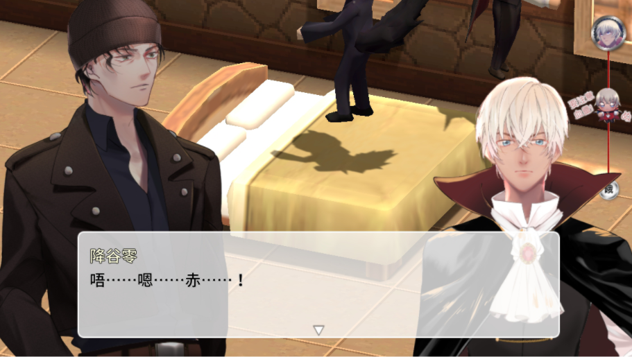
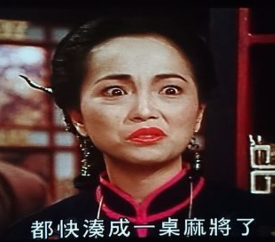

網路上買的銀彈？？！
正在繪製遊戲銀彈圖的主催，收到了來自親友的回饋：「這好像某拍賣網站上的產品去背圖！」
眾：產品去背圖WWWWWWWWWW
N：[包郵][爆款][買10送1]銀色子彈！
T：水水，要不要來一包價格最甜的銀彈？
U：是說這子彈安全嗎？會不會膛炸？（摸下巴）
T：居然會膛炸！給差評！負星！
U：
顧客：「我的子彈爆炸了！」
客服：「您好，子彈本來就會爆炸的^^」
顧客：「他在槍裡面就爆炸了啊！！！」
Q：我們對赤井的愛好深沉呀WWW
各位玩家不要擔心，最後主催繪製了最棒的銀彈給赤井！不用包郵、不用等待，現在就可以在遊戲中看到了！！
自己的本自己賣！
最初遊戲還在討論階段時，主催就打算把製作群以前的同人本放到遊戲內供大家作道具使用。
為了展示這個概念，搭了一個同人展場，還要安室自己賣自己的同人本！成熟的安室ぬい該幫忙賣本了，對吧！
在遊戲中出現的同人本都是在CWT賣過的，而各位玩家可以用熟悉的赤安愛愛本作為武器或防具與遊戲中怪物對戰！不同的同人本也有不同的屬性，請各位試試看吧！
\製作群全滅/
遊戲進行途中需要大家試玩的時候，發生了意想不到的狀況！！！
「救命喔我卡在ぬい大冒險，存檔的時候血量剩不到一半」
「你不孤單，我也ORZ」
不只一個製作組成員已經卡過《ぬい大冒險》，為此主催還調整過好幾次的難度。如果您覺得在破關上要花一些時間，請別放棄！您遇過的，製作群都遇過，願赤安愛愛之力祝您破關。
提示：請善用SHIFT鍵，配合方向鍵快跑，在威士忌山一直往南走，與小哀會合再走到右邊米花鎮就完成了。
ぬい配音員
對製作群來說，最期待的是有一天能聽到ぬい們ぬぬ叫，於是主催發出了任務通知：「總之ぬ個幾聲來放進遊戲裡！」
於是製作群在逛百貨時找了個地方錄了各種ぬぬ音，有開心的ぬ、憤怒的ぬ、各種ぬ，請大家持續關注遊戲中最可愛的、ぬぬ叫的赤井ぬい跟安室ぬい！
偉大狼王不為人知的副業竟是......？！
製作群為了讓劇本插入有關赤井身分與年齡差的線索，而在討論如何安排呈現。
「也許安排收割魔芹時，因為沒有剷子，怕露餡，所以讓赤井先去割。」
「然後發現赤井割的方式很老練這樣嗎？」
「赤井變成看過金蘋果、看過魔芹菜、很會割稻子的狼人了。安室：狼人平常在種田嗎？」
「身為狼王，關心領土範圍的作物生長也是很重要的（？）」
「嫁給赤井不愁沒飯吃喔！安室：我喝血的。」
「赤井種田養自己，獻血餵飽零君，完美（O）」
「緋色森林食物鏈： 蔬菜水果稻米 ---- 赤井 ---- 安室」
3D錯位輸出之謎
由於製作群初期還未完全掌握遊戲程式讀取3D的規則，因此3D更新後有時會呈現非常奇怪的動作。
例如空中飛狼赤井：
明明文字在開車，3D二人卻在跳彈床的赤安：
為了檢查角色動作，還試過把所有出問題的角色都調到同一地方集中測試：

還好最後把大部分3D修正好了，感謝赤安的愛愛力量！
主催專門畫人外
這次遊戲的立繪主要由左左繪畫，但是由於其他非主要角色也需要立繪，因此主催自己也負責了部分立繪，例如赤安ぬい、哈囉、赤井狼。
……不對，你不是也畫了博士嗎？
主催：博士是人外。
嗯……？人外？
嗯……的確是（一般）人（類可以作的黑科技）外。
非常認真的製作群
比起上一次製作的赤安遊戲，這次結構更加複雜、參數改變結局的選項更多。
為了搞清楚結局的分支，認真的製作群還開了幾次會，還做了一個整理表（註：實際設定跟整理表不同，只供參考）
為了增加遊戲性，製作群也整理了多種智力遊戲的想法出來，查了不少資料，雖然最後只採用了少部分，但是為了這遊戲大家都非常認真！
沖矢的語扉山陵
由於沖矢主要出沒在教堂，而為了測試一下特效，製作群把一樣特別的東西放進教堂和山陵內……請玩家親自到那兩幅地圖，並按一下B鍵，抬頭一看，你會看到意想不到的景色！
琴酒的耳朵
由於故事設定，狼族需要有狼耳（不要問為什麼赤井有四隻耳朵，我們也知道四隻耳朵很獵奇，但把赤井本來的耳朵切掉更加獵奇，所以請大家無視狼族有四隻耳朵……）。
劇情中，有帽子的琴酒也需要一對狼耳，也需要弄傷狼耳。為了達到這個效果3D模型的狼耳製作群出現了奇怪的對話：
為了善用設定，琴酒3D模型一連輸出了好幾個版本，比安室的版本還要多，實在意外用心……
肉文和3D
這次遊戲有3D系統輔助講故事，可以把「動作」結合肉文，呈現出動態故事。然而製作群看到實際效果後，發現動作讓人分心變得超好笑，至於「動作」長怎樣？看看有沒有製作群分享實際圖片吧……
相信很多人對「聲音」非常好奇，上次遊戲也分享過，肉文的音效以免費音效的拍手、吃糖和恐懼聲組合而成，輸出不同節拍配合故事速度描述。什麼？你說很真實？那就真是對製作群最大的讚美了。